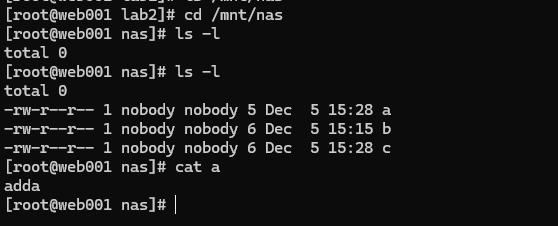
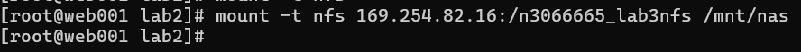
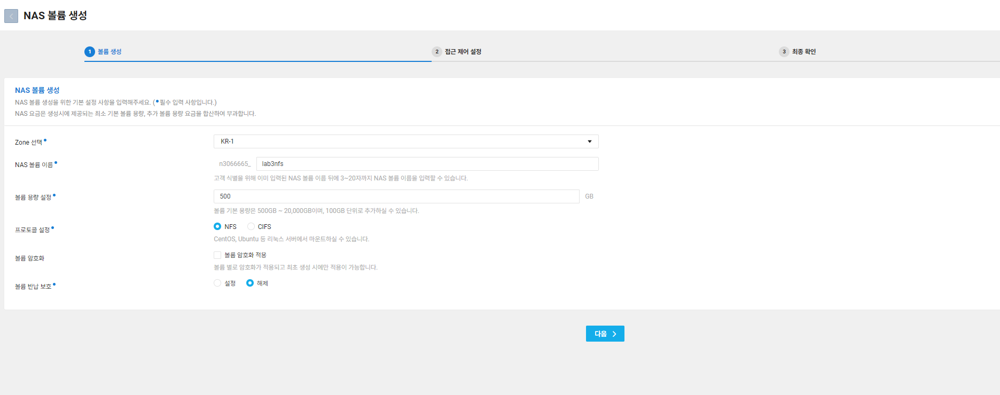
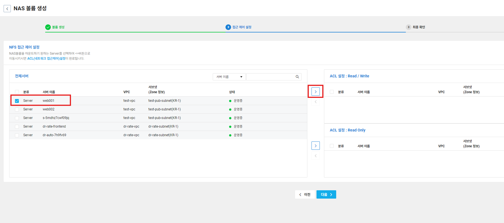
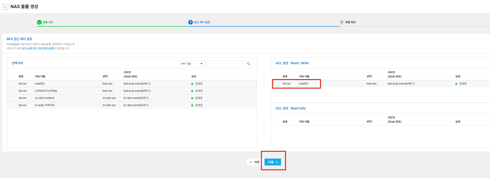

Lab3 도커, kubectl 설치 및 Container registry 생성 및 활용
학습 목표
- Container Registry 서비스 생성
- Custom image 생성 후, Container Registry에 Push
Web001 서버에 Lab 소스 다운로드 및 Kubectl 설치
# A. wget으로 파일 다운로드
wget -P /root/ https://kr.object.ncloudstorage.com/ncp-script2024/lab_source.zip
# B. 작업 디렉토리로 이동
cd /root
# C. 다운로드한 zip 파일 해제
unzip lab_source.zip
# D. kubectl 다운로드
curl -LO https://dl.k8s.io/release/$(curl -L -s https://dl.k8s.io/release/stable.txt)/bin/linux/amd64/kubectl
# E. kubectl 설치
install -o root -g root -m 0755 kubectl /usr/local/bin/kubectl
# F. yum-utils 설치
yum install -y yum-utils
# G. Docker 저장소 추가
yum-config-manager --add-repo https://download.docker.com/linux/centos/docker-ce.repo
# H. /etc/yum/vars/releasever 값을 8.9로 변경
echo "8.9" > /etc/yum/vars/releasever
# I. Docker 및 관련 패키지 설치
yum install -y docker-ce docker-ce-cli containerd.io docker-buildx-plugin docker-compose-plugin
# J. Docker 서비스 시작
systemctl start docker
Container Registry에서 사용할 Object Storage Bucket 생성
- Services >Storage >ObjectStorage >버킷 생성
- 버킷 이름 : docker-image-(내가 원하는 영문자or숫자)

- 이후 나머지 그냥 넘기고 생성
Container Registry 생성
- services >Containers >ContainerRegistry >레지스트리생성

- 레지스트리이름 : k8s-edu-(내가 원하는 영문자 or 숫자)
Custom image 생성 후, Container Registry에 Push
- Container image 생성
- Apache용 Dockerfile 생성
cd lab_source cd lab2 cat Dockerfile docker build -t image_apache . docker images docker run -tid -p 4000:80 --name=hello_apache image_apache docker container ls
- lab1-web-acg에 4000번 포트 허용하는 룰을 추가
- Services >Server >ACG로 이동 후
lab1-web-acg선택 - 상단의
ACG설정클릭 - 프로토콜 : TCP / 접근소스 : 0.0.0.0 / 허용포트 4000 입력 후
추가버튼클릭 - 하단의
적용버튼 클릭
- Services >Server >ACG로 이동 후
- 브라우저에 서버 공인IP:4000 접속
- Apache용 Dockerfile 생성
- Container Registry에 이미지 업로드
- 다시콘솔 > Container Registry로 들어가 Public Endpoint 정보를 확인
- Container registry 로그인 (k8s-tool 서버에서)
docker login k8s-edu2.kr.ncr.ntruss.com - Container Registry에 이미지 업로드
docker image tag image_apache <ContainerRegistry의PublicEndpoint>/image_apache:1.0 docker push <ContainerRegistry의PublicEndpoint>/image_apache:1.0
Lab 4 NAS & Snapshot
학습 목표
- NAS 500GB 생성(NFS)
- NAS Mount
- Snapshot 설정 및 테스트
NAS 500GB 생성(NFS)
- Storage > NAS > NAS Volume에서 NAS 볼륨 생성을 선택

- ACL설정 서버에서 web001 선택 후 Read/Write권한으로 추가 후 하단의 다음 버튼 클릭 → 이후 볼륨 생성

NAS Mount
- 서버에서 마운트
- Web001에서 마운트를 진행합니다
- CentOS6.x Linux에서 NFS를 사용하기 위해서는 기본적으로 nfs-utils 패키지를 설치하여야 합니다
- 설치 명령어는 다음과 같습니다
- 레퍼지토리 오류가 발생 시 해당 오류를 해결하고 진행 (ex.쿠버네티스 레퍼지토리 삭제하고 설치 시 정상적으로 진행)
dnf -y install nfs-utils- 참고) CentOS6.x NFS를 사용하기 위해서는 RPC 데몬이 기동되어야 합니다. 7.x는불필요합니다.
- NAS를 마운트하기 위해서는 먼저 마운트 포인트를 만들어 주어야 합니다.
- mkdir 명령어로 먼저 마운트 포인트를 생성합니다
/mnt/nas라는 디렉터리를 만듭니다.mkdir /mnt/nas- 관리 콘솔에서 NAS 신청을 통해 받은 볼륨명과 생성한 마운트 포인트를 이용하여 마운트를 합니다. 마운트는 다음과 같습니다.
mount -t nfs볼륨 마운트 포인트mount -t nfs 169.254.82.16:/n3066665_lab3nfs /mnt/nas- 예를들어,
10.10.10.10:/vol/nas라는 볼륨을 받았다면 다음과 같은 명령으로 마운트할수 있습니다.- 참고) 만약 위 명령어로 mount가 안될 경우, nfs 버전을 4로 지정하여 다시 재시도합니다.
mount -t nfs 10.10.10.10:/vol/nas/mnt/nas - mount -t nfs -o vers=3 169.254.3.5:/n2590940_test/mnt/nas
- 스냅샷 설정
- 볼륨을 선택하고 상단의 볼륨 설정 >스냅샷 설정을 선택합니다.
- 그림과 같이 스냅샷 생성을 수행하고 볼륨 용량의 5%로 설정합니다
- 다음과 같이 파일을 생성 및 삭제하면서 스냅샷 기능을 확인합니다.
- 테스트 파일 생성
echo "testa" > /mnt/nas/a echo "testb" > /mnt/nas/b
- 테스트 파일 생성
- 볼륨을 선택하고 상단의 볼륨 설정 >스냅샷 설정을 선택합니다.
- 즉시 스냅샷 생성
- NAS > Snapshot에서 볼륨을 선택하고 상단의 ‘스냅샷 즉시 생성’을 선택합니다.
- 그리고 다음 명령어로 파일을 삭제한다.
rm -rf /mnt/nas/a rm -rf /mnt/nas/b ls /mnt/nas- 삭제된 것을 확인할 수 있다.
- 스냅샷으로 파일을 복구합니다
ls /mnt/nas명령어를 통해 복구된 모습을 볼 수 있다.- 파일을 추가로 생성하고 변경합니다.
echo "testc" > /mnt/nas/c echo "adda" > /mnt/nas/a - 다시 즉시 스냅샷을 생성한다.
- 파일을 삭제합니다.
rm -rf /mnt/nas/* - 마지막으로 생성한 스냅샷을 이용하여 복구합니다.
- 복구 확인
- NAS > Snapshot에서 볼륨을 선택하고 상단의 ‘스냅샷 즉시 생성’을 선택합니다.